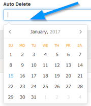
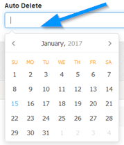
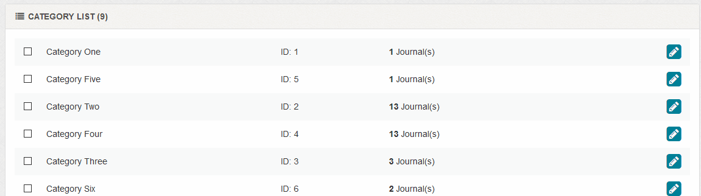
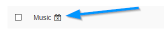
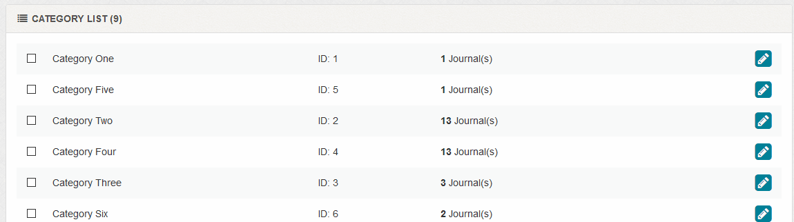
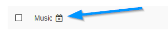

Categories
Overview
Enter and / or edit journal categories.
General > Category Name
Enter category name.
General > Enabled
Enable or disable category.
Meta > Alternative Browser Title
Alternative category title that appears in your address bar. This might be hidden in some browsers but can be useful for search engines when
spidering your journal. Optional. Leave blank to disable.
Meta > URL Slug
Enter search engine friendly slug for this category. This is required (even if search engine friendly urls are off) and MUST be unique.
The ONLY characters allowed for slugs are: hyphens, underscores & alphanumeric. Anything else will be removed or ignored.
The ONLY characters allowed for slugs are: hyphens, underscores & alphanumeric. Anything else will be removed or ignored.
Private > Username
If you want ALL journals in this category to be private, enter username. Note that if your journal is in multiple categories and one of those categories are
password protected, the journal will be protected regardless of other categories. Also, when viewing a journal on a list screen, entering any user/pass
combination from any password protected category will work.
Private > Password
If you want ALL journals in this category to be private, enter password. Note that if your journal is in multiple categories and one of those categories are
password protected, the journal will be protected regardless of other categories. Also, when viewing a journal on a list screen, entering any user/pass
combination from any password protected category will work.
Click the icon to auto generate secure password. If you use this option you`ll see the password preview appear above the box. Remember to make a note of it first if you need to reference it afterwards.

Click the icon to auto generate secure password. If you use this option you`ll see the password preview appear above the box. Remember to make a note of it first if you need to reference it afterwards.
Private > Journals In This Category ONLY Show In This Category
If this is set to yes, journals in this category will NOT show on other list screens, such as archives, dashboard, rss and search results and will also
not show in recent journals. Ideal if you want journals to be visible only in a private category. If a journal is in multiple categories and this option
is set for at least one category, this will act as the global default.
Example:
Cat One (Set)
Cat Two (Not Set)
Cat Three (Not Set)
Because of Cat One, journal would only display if viewing Cat One, Cat Two or Cat Three.
Example:
Cat One (Set)
Cat Two (Not Set)
Cat Three (Not Set)
Because of Cat One, journal would only display if viewing Cat One, Cat Two or Cat Three.
Options > Auto Delete
A category can be set to auto delete. If this is enabled ALL journals in this category are deleted. Useful if you want to set up a special category with
password protected journals for a limited time. Example, for site offers. Note that if journals are in multiple categories, they will NOT delete if they
are still present in other categories.
Enter auto delete date if required. Enter only via the calendar provided, this appears when you click in the box.

Leave blank for no auto deletion. Note that for auto deletion, you will need to set up a cron job. More information here.
Enter auto delete date if required. Enter only via the calendar provided, this appears when you click in the box.

Leave blank for no auto deletion. Note that for auto deletion, you will need to set up a cron job. More information here.
Category List
1 To delete, use checkboxes and the delete button. You can select all via the icon.
2 To edit, click the icon.
3 To reorder, drag and drop rows.

A icon denotes a private category.
If a category is set to auto delete, a icon is shown.

2 To edit, click the icon.
3 To reorder, drag and drop rows.

Note that deleting a category will delete all journals in that category. If a journal is in multiple
categories and other categories still exist, the journal will NOT be deleted.
A icon denotes a private category.
If a category is set to auto delete, a icon is shown.
